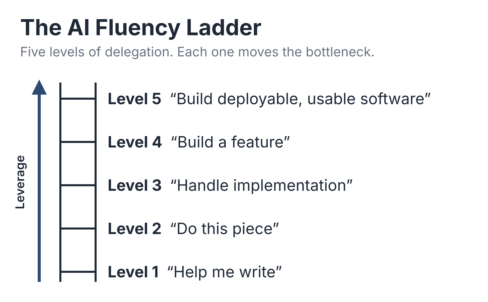

Climbing the AI Fluency Ladder
From AI-assisted coding to agentic programming · 40 minutes
Slides © 2026 Jerod W. Wilkerson. All rights reserved. You’re welcome to share the link to this page.
The biggest thing AI changes about software development isn’t how fast you write code. It’s how much of the work you can hand off. This talk walks up the AI Fluency Ladder, shows how models fail and how a harness designs around those failures, and puts real numbers on the gains from one project, with the caveats stated up front.
Resources from the Talk
- Companion Code The Level 3 harness built in Appendix A, MIT-licensed, on GitHub.
- Book Examples Every code, prompt, and configuration example from the book.
- The AI Fluency Ladder The ladder graphic from the talk. Tap to view full size and save.

